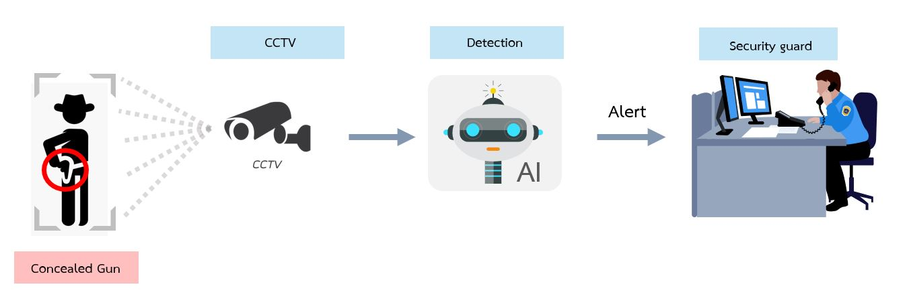
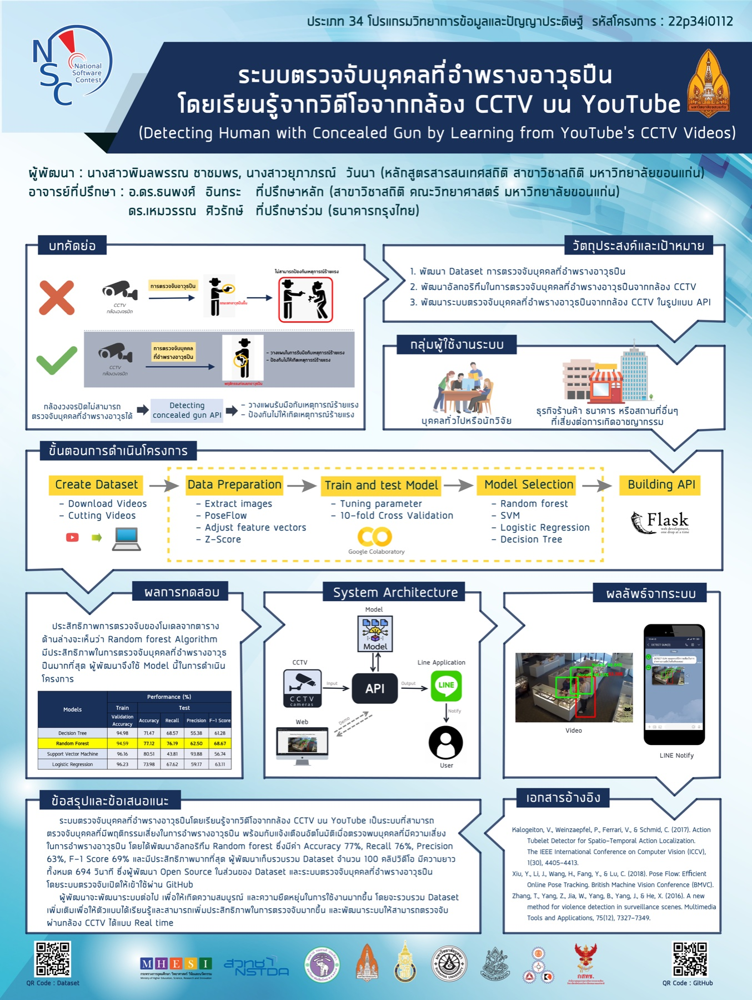

Most systems see the gun. We try to see it coming.
Existing CCTV analytics detect firearms once they are drawn — when it is already too late. This project asks whether the body language of someone hiding a gun is enough to raise an early alarm.
Abstract
We present a human tracking dataset, CONcealed Gun (CONG), where each human is identified as either a normal person, a person with a visible gun, or a person with a concealed gun. The dataset was mined from CCTV footage of robbery incidents uploaded to YouTube. A key distinction of the dataset is that we mark the moment when a person with a concealed gun starts to reveal it, so the footage before the revelation can be used as training data for identifying people with concealed guns.
Along with the dataset, we propose a two-step detection algorithm — human pose estimation followed by human movement analysis — and explore its performance across different backbone models and footage lengths. Our results show that CONG is a challenging benchmark: recognizing a hidden trace is hard from both a dataset-construction and a computer-vision perspective.

From camera to guard: CCTV footage is analyzed in real time and suspicious people trigger an alert before an incident happens.
New dataset. Real robbery CCTV from YouTube, tracked per person with three identity labels.
Pose-based detector. Skeleton tracking + movement tubelets, no need to see the weapon itself.
Working system. Flask API, web demo and LINE notifications for security staff.
A tracking dataset with a little secret
Each tracked person in each clip carries one of three identities. The secret: people who look completely normal for most of the clip may turn out to be armed.
Normal
Bystanders, staff and customers with no weapon throughout the clip.
Visible gun
People whose firearm is already in view — the case conventional detectors handle.
Concealed gun
People carrying a hidden firearm that they reveal later in the footage.
Labeling the moment of revelation
For every armed person we annotate the frame where the gun starts to appear. Everything before that point shows a person who looks unarmed but is not — exactly the signal an early-warning model must learn.
Read the body, not the weapon
A hidden gun is, by definition, invisible to an object detector. Instead we track each person's skeleton and learn the subtle movement patterns of carrying a concealed weapon.
Collect
Mine robbery CCTV clips from YouTube and cut them around each incident.
Pose & track
Estimate 2D body keypoints and link them across frames into per-person tracks.
Tubelets
Slice each track into short 1 s / 2 s tubelets and build normalized movement features.
Classify
Predict the probability that each person is carrying a concealed gun.
System architecture
The trained model is served behind an API. Camera footage goes in; per-person risk scores and annotated frames come out.
Web demo for debugging
A web application takes a video, draws boxes per person with their concealed-gun probability, and pushes an alert with a snapshot to a pre-configured LINE account.
A hard problem, measured honestly
Recall matters most for early warning: a missed armed person is far costlier than a false alarm a guard can dismiss.
CONG benchmark
Best configurations from the KST 2024 paper, evaluated per tubelet.
Low precision reflects how subtle the cue is — and why CONG is a useful, challenging benchmark for the community.
Prototype model selection
Earlier NSC 2020 prototype, test set (%). Random Forest was chosen for deployment.
| Model | Accuracy | Recall | Precision | F1 |
|---|---|---|---|---|
| Decision Tree | 71.47 | 68.57 | 55.38 | 61.28 |
| Random Forest | 77.12 | 76.19 | 62.50 | 68.67 |
| SVM | 80.51 | 43.81 | 93.88 | 56.74 |
| Logistic Regression | 73.98 | 67.62 | 59.17 | 63.11 |
The two evaluations use different data splits and protocols and are not directly comparable.
Demo & presentations
Full prototype walkthrough: upload a clip in the web app → per-person concealed-gun probability → LINE notification with a snapshot.
Presentation for the Prime Minister's Digital Award 2020 · project talk on YouTube ↗

BibTeX
If you use the CONG dataset or build on this work, please cite:
@inproceedings{wanna2024cong, title = {CONG: Yet Another Human Tracking Dataset, but with a Little Secret}, author = {Wanna, Yupaporn and Intharah, Thanapong}, booktitle = {2024 16th International Conference on Knowledge and Smart Technology (KST)}, pages = {35--39}, year = {2024}, publisher = {IEEE}, doi = {10.1109/KST61284.2024.10499663} }